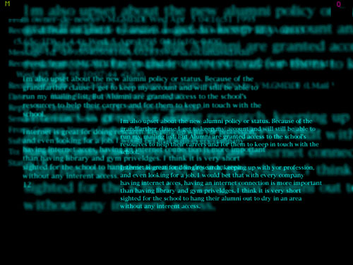

next
Image you see here is shot from screen on Macintosh. This was a part of my design project to design better way(or worse way) of interfacing with too many information that has different angle of meaning. In another word one thing can be viewed as different things in real life depends on who you are, or which angle of idea you are looking it from. In this actual scene, you see only text. As information is closer to your currently pointed item, information that is related to it gather, and they will represent themselves in different focus. This is a trying to assimulate one of human's sense we alrady have. I am corrarating distance of information as distance of focus of our eyes. I wanted to see if interface can work better when human is given a similarity on it to our body function.... and so on...
BTW, this is not a real program. It is created on Macromind Director(now, called Macromedia Director) to visualize idea.